Privacidad y control
Consentimientos, una copia de tus datos, borrar la cuenta y los datos de la red, restablecer Mi red y el botón «No he sido yo»: lo que puedes hacer tú mismo.
Aquí tienes lo que puedes hacer tú mismo en la aplicación. Los detalles legales están en la política de privacidad.
Tu «sí» se puede retirar
Los consentimientos están en un mismo sitio: el chat con Mi gestor, la analítica, las ofertas y las noticias. Cada uno se apaga con el mismo interruptor con el que se encendió.


Tus datos, cuando los pidas
Puedes pedir una copia de tus datos en la aplicación. Te la envían a tu correo.


Puedes irte, y también cambiar de idea
La cuenta se borra cuando han terminado los contratos. Mientras siguen en vigor, la aplicación explica por qué y propone hablarlo con Mi gestor. Tras la confirmación, el borrado queda programado y, mientras no se haya hecho, se puede cancelar con el botón «Cancelar el borrado».
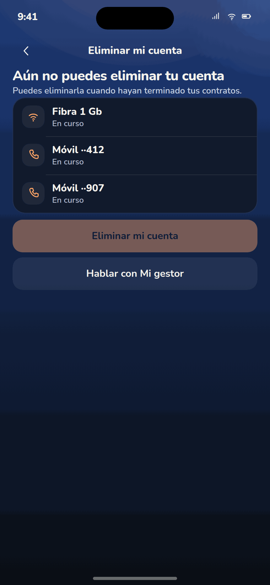


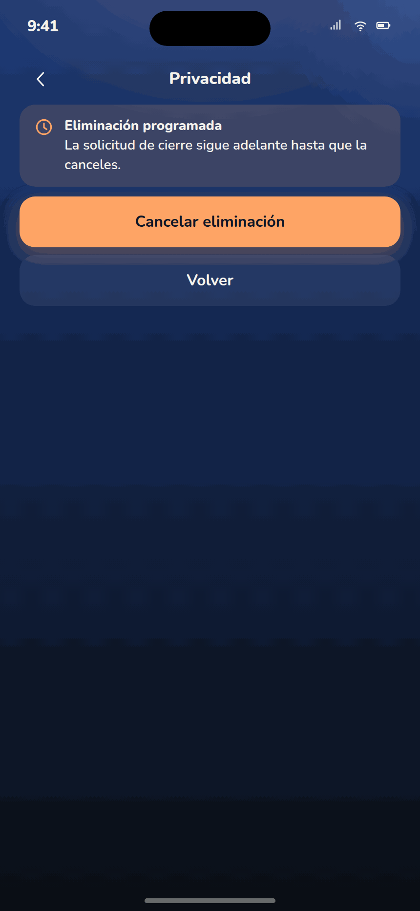

Borrar los datos de la red, con un botón aparte
Los datos de la red de casa se pueden borrar aparte de la cuenta. Lo hace el titular, confirmando la acción con biometría o con el código del teléfono.
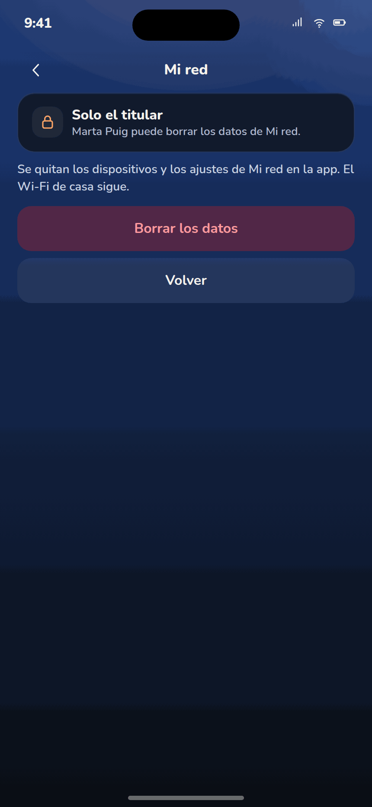

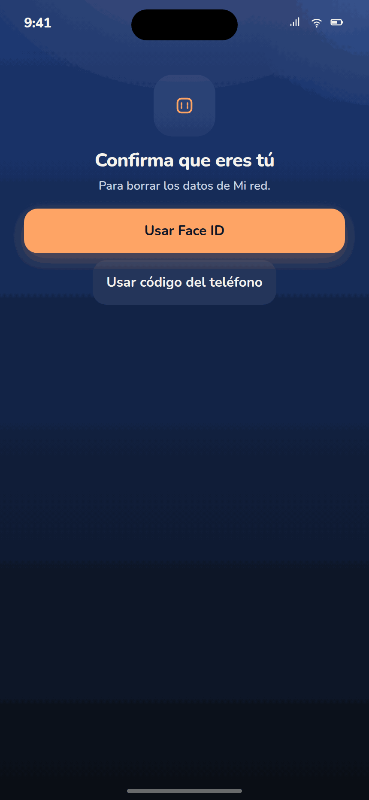

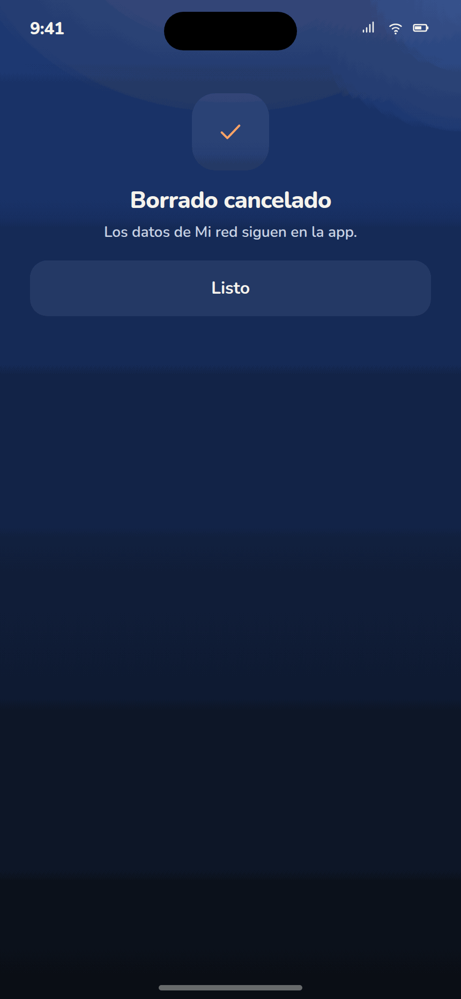


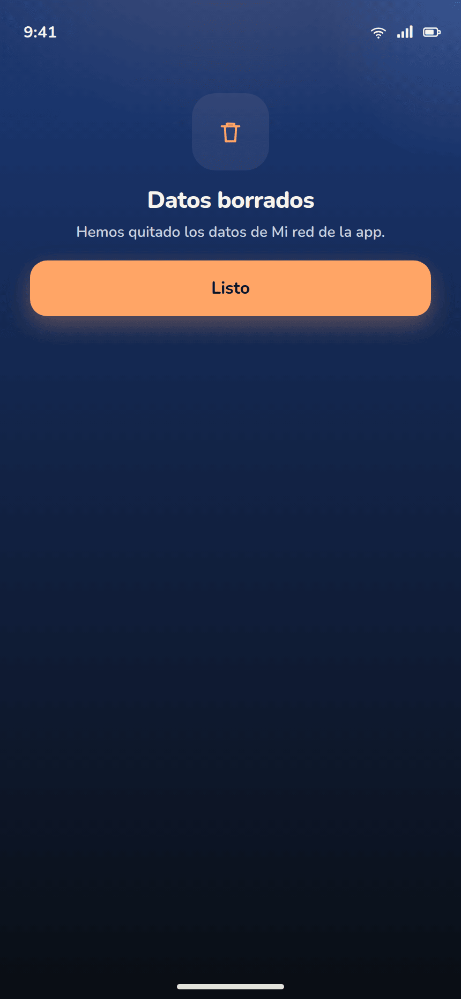
Si ves algo que no es tuyo, un botón
Si en la cuenta o en Mi red aparece algo que tú no hiciste, por ejemplo un teléfono desconocido, pulsa «No he sido yo». Comprobaremos qué ha pasado, y la aplicación te dice qué hacer enseguida: cambiar el código del teléfono y las contraseñas del router y del Wi‑Fi.
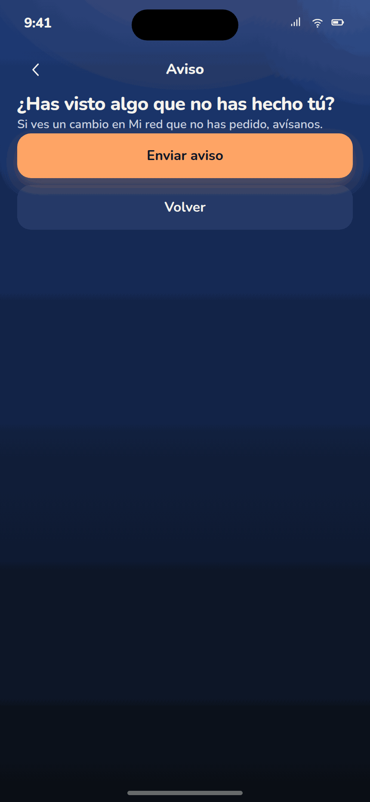

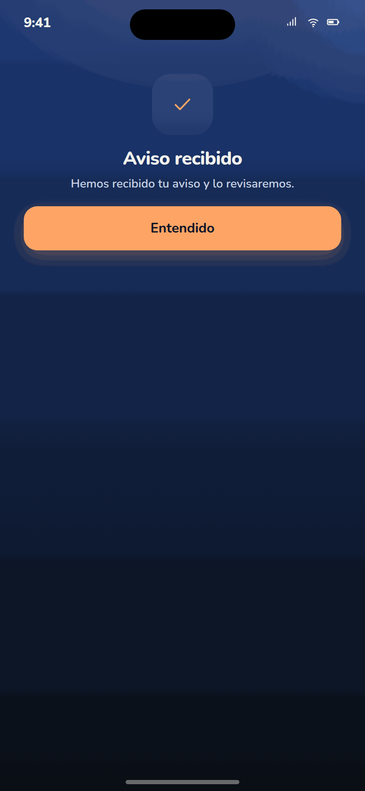

Si se pierden todos los teléfonos, la casa se puede recuperar
Si se pierden todos los teléfonos de la familia o aparece un desconocido en la red, el titular puede restablecer Mi red. El restablecimiento empieza a las 72 horas, y hasta entonces se puede cancelar. Después el teléfono se conecta de nuevo.
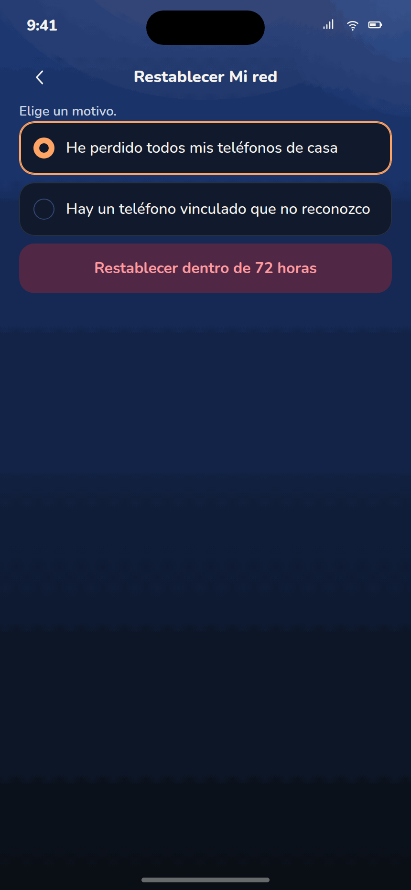


Solo tú puedes abrirlo
La aplicación se puede cerrar con Face ID, y al abrirla pide confirmar que eres tú. Si Face ID no funciona, sirve el código del teléfono.
La aplicación se puede cerrar con la huella, y al abrirla pide confirmar que eres tú. Si la huella no funciona, sirve el código del teléfono.


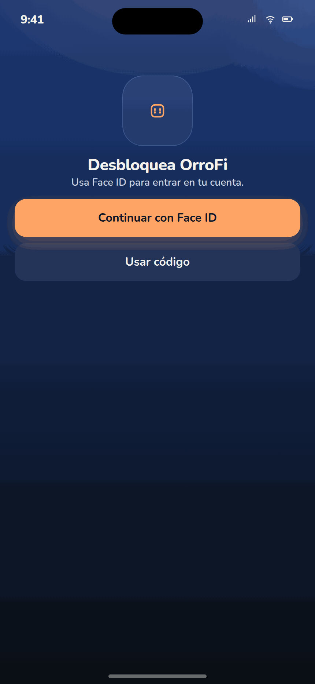
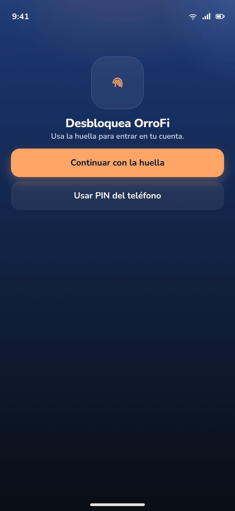
Política de privacidad del sitio
OrroFi es una marca de PADELADA WORLD, S.L. (NIF B05783238). Los datos de las pantallas son ficticios y los precios, un ejemplo.
Este sitio no usa cookies ni contadores de visitas.
Preguntas sobre los datos: privacidad@orrofi.es.